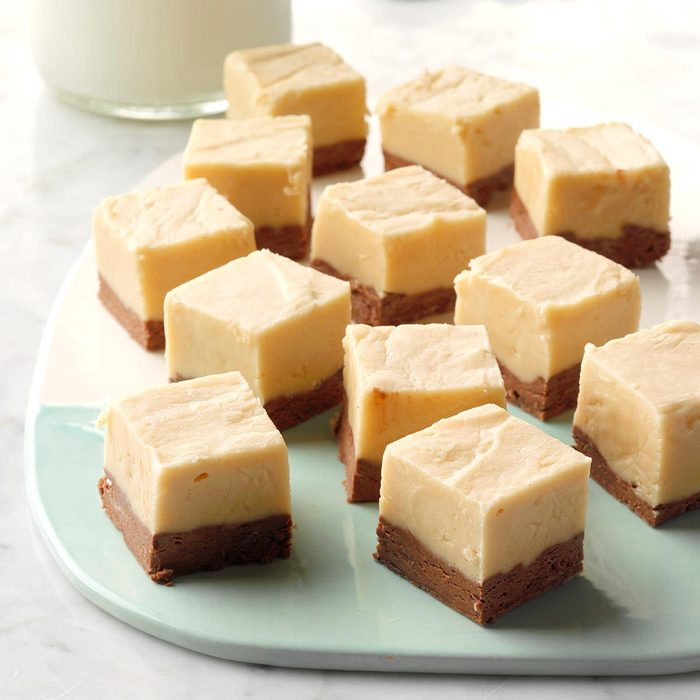

Ribbon Fantasy Fudge
Total Time: 20 min Prep- 20 min
This chocolate & peanut butter fudge truly lives up to its name as a fantasy!

This is a very simple recipe using chocolate, peanut butter, and marshmallow creme
Ingredients
- 2 teaspoons plus 3/4 cup butter, cubed, divided
- 3 cups sugar
- 1 can (5 oz) evaporated milk
- 1 jar (7 oz) marshmallow creme
- 1 cup semisweet chocolate chips
- 1 teaspoon vanilla extract, divided
- 1/2 cup peanut butter
Directions
- Line a 9-in square pan with foil and grease it with 2 teaspoons butter; set aside. In a large heavy saucepan, combine the sugar, milk and remaining 3/4 cup butter. Bring to a full rolling boil, stirring constantly. Boil for 4 minutes over medium heat, stirring to prevent scorching. Remove from the heat and set aside.
- Divide marshmallow creme between 2 heat-resistant bowls; add chocolate chips and 1/2 teaspoon vanilla to 1 bowl, and peanut butter and remaining vanilla to the other. Pour half of sugar mixture into each bowl.
- Stir chocolate mixture until smooth and pour into prepared pan; stir peanut butter mixture and carefully pour over chocolate layer. Refrigerate until firm.
- Using foil, lift fudge out of pan, then discard the foil. Cut fudge into 1-1/4-in squares.
Nutrition Factss
1 piece: 99 calories, 4g fat (2g saturated), 7mg cholesterol, 39mg sodium, 15g carbohydrate (14g sugar), 1g protein